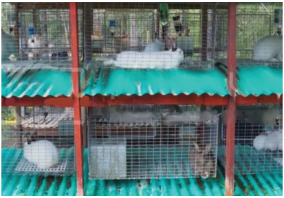

Agriculture for Secondary Schools
Cages: Wire or metal cages are
often used in commercial rabbit
farming (Figure 8.3). Cages are
suitable for larger operations
where many rabbits are kept.
Cages are easy to clean, have
good ventilation, and can be
stacked to save space.
Figure 8.3: An example of a rabbit cage
Source:
(https://www.amazon.com/AJAAS-Indoor-Rabbit-
Cage-142x111x39cm/dp/B0B5L4Y7XS?th=1)
Rabbitry (Enclosed building): This is a dedicated building that houses multiple
cages or hutches. It is common in larger-scale rabbit farming operations. It
protects from extreme weather and predators and allows better environmental
control (temperature, humidity, light).
Characteristics of a rabbit house
(i)
Each rabbit should have enough space to move, stretch, and rest
comfortably. Typically, a cage should be at least 3-4 times the size of the
rabbit.
(ii) Good ventilation is crucial to prevent respiratory problems. Ensure the
housing allows for adequate air circulation without exposing rabbits to
drafts.
(iii) Rabbits thrive well in temperatures between 10°C to 21°C. Housing
should protect them from extreme heat or cold.
(iv) Provide natural or artificial lighting, mimicking a natural day-night cycle.
Avoid direct sunlight, which can overheat the rabbits.
(v) Ensure the housing is secure and elevated to prevent access by predators
like dogs, cats, or rodents.
(vi) Rabbit house can have wire mesh or solid flooring. Wire mesh flooring
is common in cages, allowing droppings to fall through and keeping the
living area clean. Ensure the mesh is not too wide to avoid injuring the
rabbit’s feet. Solid flooring is used in hutches, often covered with litter
(straw or wood shavings.)
135
Student’s Book Form Two